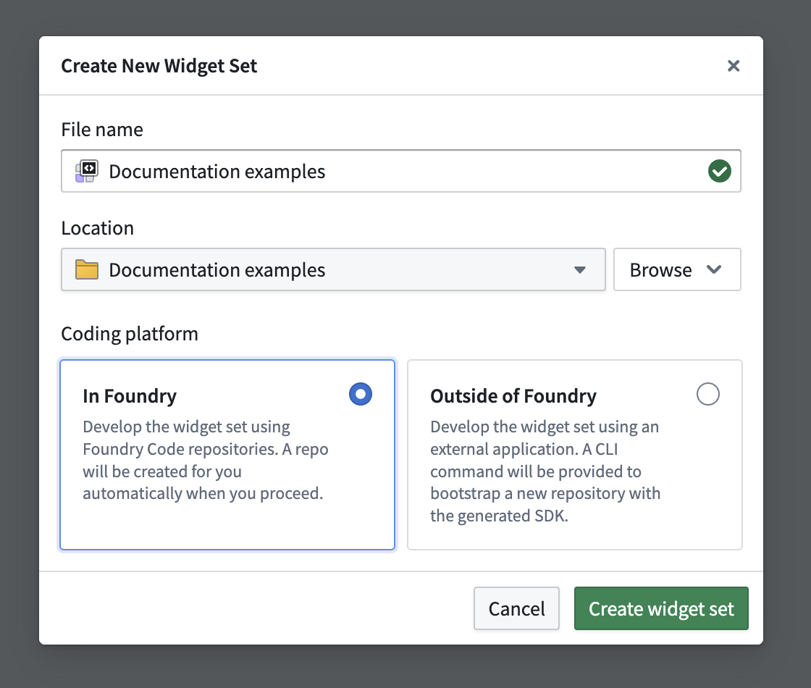
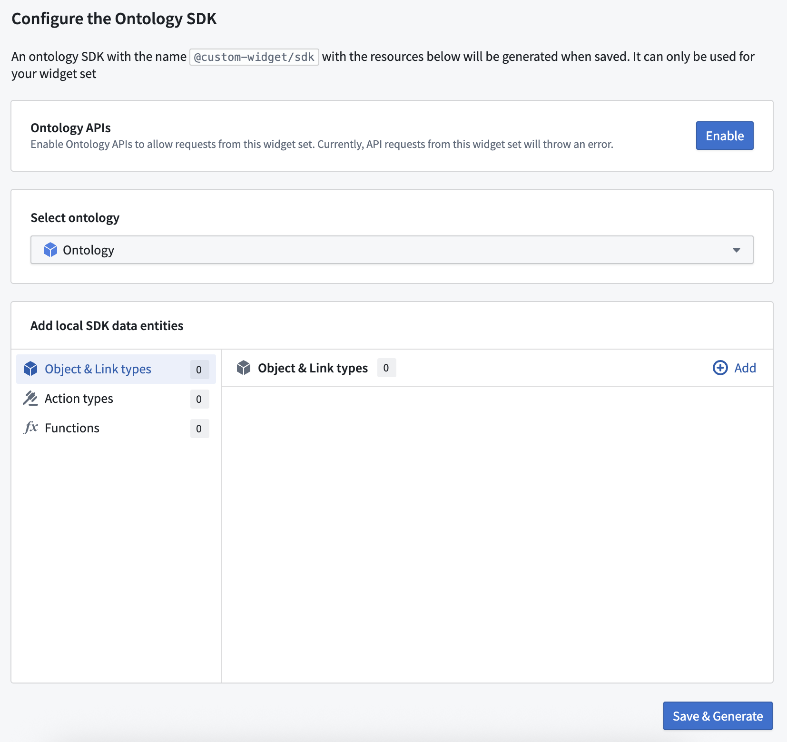
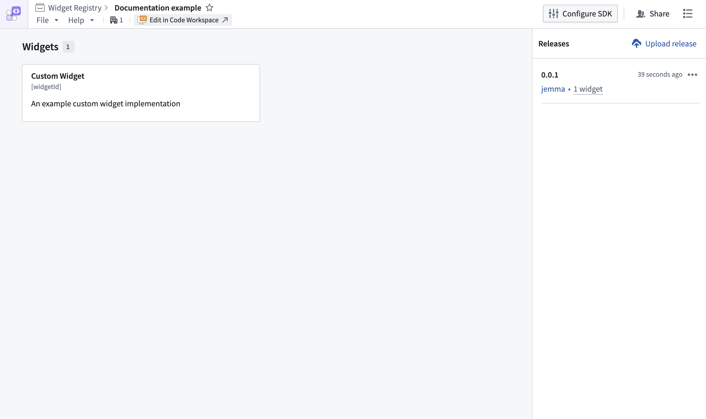
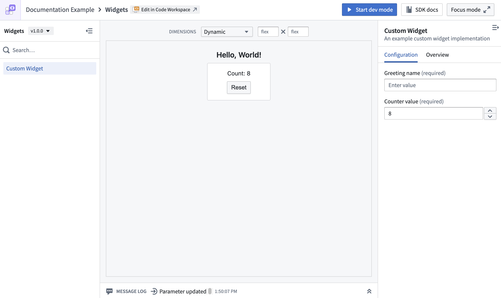

To create a widget set:

To access the ontology from your widget set in code, configure an OSDK using the creation wizard (optional during setup). You can add or configure an OSDK for your widget set at any time.
If you configure an Ontology SDK, you also need to enable the Ontology APIs for your widget set so that API calls made from the OSDK can succeed. This action can be performed by a user with the Information Security Officer default enrollment role. Alternatively, a user with a custom enrollment role that grants the Enable widget set unscoped API access workflow can also perform this action. For instructions, see Use Ontology SDK (OSDK) in a widget set.

If you chose to develop in Foundry, the widget release will be started automatically and should complete within a few minutes. To check the status of your custom widget:
If you chose to develop outside of Foundry, follow Publish a widget set to create the first release.
You do not need to wait for the first release to preview a widget. Use dev mode to preview an unpublished widget in the custom widgets playground or a VS Code workspace.
To preview a widget without dev mode, wait for the first release to finish publishing and then refresh the widget set overview page. Select the widget to preview its published version.

